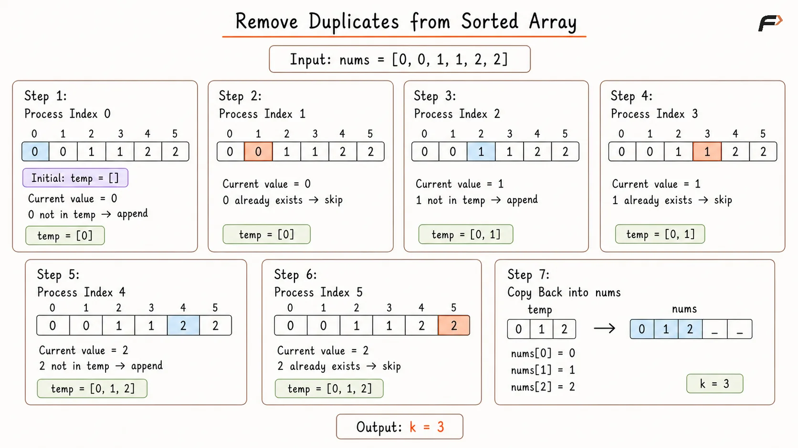
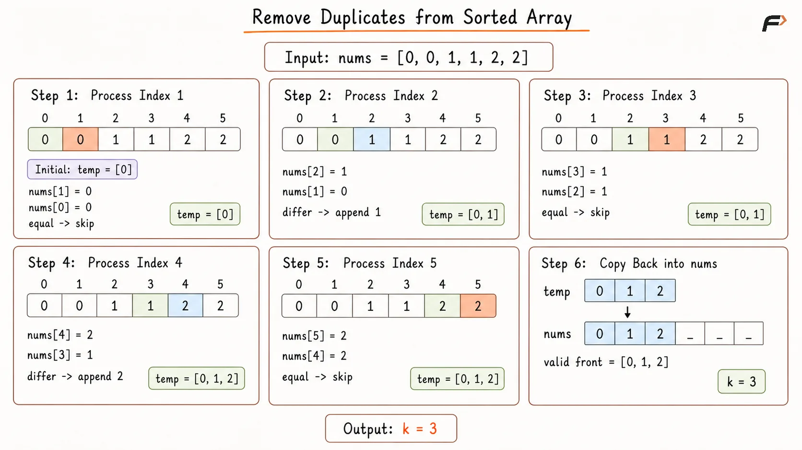
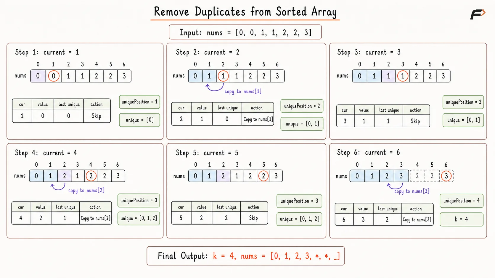

Remove Duplicates from a Sorted Array In Place
Given an integer array nums sorted in non-decreasing order, remove duplicate values in place so that every unique value appears exactly once.
The relative order of the unique values must remain unchanged.
After modification:
The first
kpositions ofnumsmust contain all unique values.The method must return
k, representing the number of unique values.Values stored after index
k - 1do not affect the result.
Example 1
Input: nums = [1, 1, 2]
Output: 2, nums = [1, 2, _]
Explanation: There are 2 unique elements: 1 and 2. They are placed in the first two positions of nums.
Example 2
Input: nums = [0, 0, 1, 1, 1, 2, 2, 3, 3, 4]
Output: 5, nums = [0, 1, 2, 3, 4, , , , , _]
Explanation: There are 5 unique elements: 0, 1, 2, 3, and 4. They are placed in the first five positions of nums.
Example 3
Input: nums = [5, 5, 5]
Output: 1, nums = [5, , ]
Explanation: Only one unique element exists, so k is 1.
Brute Force Approach
The direct approach stores unique values in a separate temporary array.
For every value in nums, the complete temporary array is searched to determine whether that value has already been stored. A value is appended only when no match exists.
Because values are processed from left to right, the relative order of the unique elements remains unchanged.
Algorithm
Store the array size in
n. Ifnis0, return0because an empty array contains no unique values.Create an empty array
temp, which stores one occurrence of every distinct value while preserving their original order.Traverse
numsfrom left to right and searchtempto check whether the current value has already been collected.If no matching value exists in
temp, append the current value because it represents a newly discovered distinct element.Copy all values from
tempinto the beginning ofnums, placing the unique sequence in the required front portion of the original array.Return the size of
tempask, since it represents the total number of unique values.
Dry Run

Remove Duplicates from Sorted Array Brute Force Dry Run.png
Solution
#include <bits/stdc++.h>
using namespace std;
class Solution {
public:
int removeDuplicates(vector<int>& nums) {
int n = nums.size();
// An empty array has no unique values.
if (n == 0) {
return 0;
}
vector<int> temp;
for (int num : nums) {
bool alreadyPresent = false;
/*
* Search the collected values to check
* whether num has appeared before.
*/
for (int value : temp) {
if (value == num) {
alreadyPresent = true;
break;
}
}
// Store only the first occurrence of each value.
if (!alreadyPresent) {
temp.push_back(num);
}
}
// Place the unique values at the front of nums.
for (int index = 0; index < temp.size(); index++) {
nums[index] = temp[index];
}
return temp.size();
}
};
int main() {
vector<int> nums = {1, 1, 2, 2, 3};
Solution solution;
int k = solution.removeDuplicates(nums);
cout << "k = " << k << endl;
for (int index = 0; index < k; index++) {
cout << nums[index] << " ";
}
return 0;
}Complexity Analysis
Time Complexity: O(N²), where N represents the array size. Searching temp for every array value may require O(N) time, producing quadratic work in the worst case.
Space Complexity: O(N), because temp may store all N values when every value is unique.
Better Approach
Because the array is sorted, duplicate values always appear beside one another. A value begins a new distinct group only when it differs from the previous array value.
This removes the need to search the complete temporary array. The unique values can be collected using adjacent comparisons and then copied back into nums.
Algorithm
Store the array size in
n. If the array is empty, return0because there are no unique values.Create
tempand addnums[0], since the first element of a non-empty sorted array always starts the first distinct group.Traverse from index
1ton - 1, checking each element against the value immediately before it.If
nums[index] != nums[index - 1], appendnums[index]totempbecause a change in value marks the beginning of a new distinct group.Copy the values from
tempinto the beginning ofnumsso that the first positions contain all unique values in their original order.Return the size of
tempask, which gives the length of the valid unique portion.
Dry Run

Remove Duplicates from Sorted Array Better Approach Dry Run.png
Solution
#include <bits/stdc++.h>
using namespace std;
class Solution {
public:
int removeDuplicates(vector<int>& nums) {
int n = nums.size();
// An empty array has no unique values.
if (n == 0) {
return 0;
}
vector<int> temp;
temp.push_back(nums[0]);
/*
* In a sorted array, a change from the
* previous value starts a new unique group.
*/
for (int index = 1; index < n; index++) {
if (nums[index] != nums[index - 1]) {
temp.push_back(nums[index]);
}
}
// Copy the unique sequence back to the front.
for (int index = 0; index < temp.size(); index++) {
nums[index] = temp[index];
}
return temp.size();
}
};
int main() {
vector<int> nums = {1, 1, 2, 2, 3};
Solution solution;
int k = solution.removeDuplicates(nums);
cout << "k = " << k << endl;
for (int index = 0; index < k; index++) {
cout << nums[index] << " ";
}
return 0;
}Complexity Analysis
Time Complexity: O(N), where N represents the array size. One traversal collects the unique values, and another copies them into the front of nums.
Space Complexity: O(N), because temp may store every value when the input contains no duplicates.
Optimal Approach
The unique sequence can be constructed directly inside the front portion of nums.
uniquePosition marks the next position available for a newly discovered value. The first value is already unique, so the next available position begins at index 1.
As current scans the remaining array, its value is compared with the latest unique value stored at uniquePosition - 1. A different value is copied into the next available position.
This two-pointer technique modifies the array in place using constant auxiliary space.
Algorithm
Store the array size in
n. Ifnis0, return0because no unique values exist.Initialize
uniquePositionwith1, sincenums[0]already occupies the first position of the unique sequence.Traverse the array from index
1usingcurrent, where each value is checked as a possible new distinct element.Compare
nums[current]withnums[uniquePosition - 1], which always stores the most recently confirmed unique value.If both values differ, copy
nums[current]intonums[uniquePosition]and incrementuniquePosition, extending the unique portion by one element.Return
uniquePositionask, since indices0throughk - 1now contain all unique values exactly once.
Dry Run

Remove Duplicates from Sorted Array Optimal Dry Run.png
Solution
#include <bits/stdc++.h>
using namespace std;
class Solution {
public:
int removeDuplicates(vector<int>& nums) {
int n = nums.size();
// An empty array has no unique values.
if (n == 0) {
return 0;
}
int uniquePosition = 1;
for (int current = 1; current < n; current++) {
/*
* A different value means a new
* unique element has been found.
*/
if (nums[current] != nums[uniquePosition - 1]) {
nums[uniquePosition] = nums[current];
uniquePosition++;
}
}
return uniquePosition;
}
};
int main() {
vector<int> nums = {1, 1, 2, 2, 3};
Solution solution;
int k = solution.removeDuplicates(nums);
cout << "k = " << k << endl;
for (int index = 0; index < k; index++) {
cout << nums[index] << " ";
}
return 0;
}Complexity Analysis
Time Complexity: O(N), where N represents the array size. The current pointer visits every position once.
Space Complexity: O(1), because only the two pointer variables require auxiliary storage.
FAQs
Q1. Why does the method return k instead of returning a resized array?
The array is modified in place. The returned value k identifies the valid front portion containing the unique sequence.
Q2. Why can the values after index k - 1 be ignored?
The problem evaluates only the first k positions. Values after that portion are outside the required result.
Q3. Why is sorted order important for the Optimal Approach?
Sorting places equal values next to one another. Therefore, comparing with the latest stored unique value is sufficient to detect duplicates.
Q4. Why does uniquePosition begin at 1?
For a non-empty array, nums[0] already occupies the first position of the unique sequence. Index 1 is therefore the next available writing position.
Q5. Why compare with nums[uniquePosition - 1] instead of nums[current - 1]?
nums[uniquePosition - 1] always stores the latest confirmed unique value. This directly compares the current candidate with the final unique sequence being constructed.
Q6. What happens when all values are equal?
uniquePosition remains 1, so the method returns k = 1, and the first position contains the only unique value.